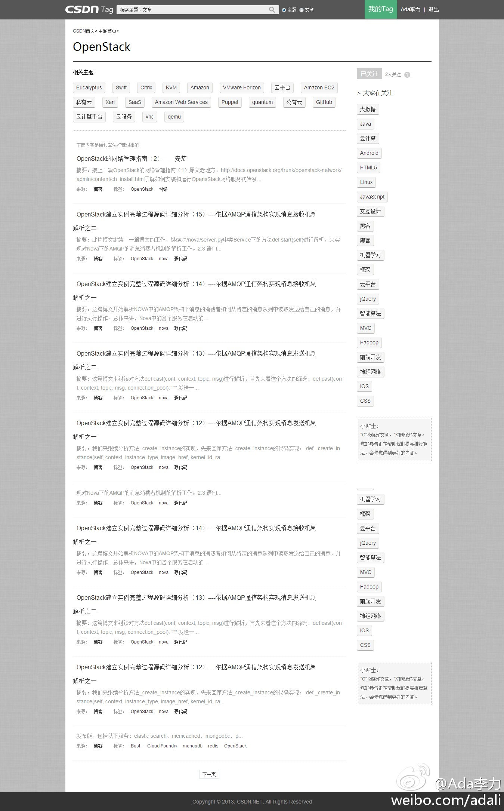
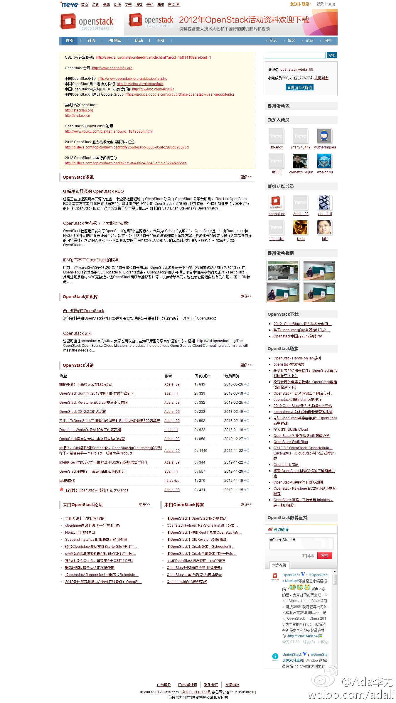

编程马拉松的活动真多啊。//@fiona_duan: Test the web forward编程马拉松于11月9日来到深圳啦！各位HTML技术和规范的开发工程师欢迎参加，免费的哦！报名请进： 网页链接 这次有无数W3C老外大大们参加哟，是难得的与专家面对面的机会。别担心英语，我们会有现场翻译滴！～～～---:抱歉，作者已设置仅展示半年内微博，此微博已不可见。
@ShiningXYY @CSDN李涛 //@zibin: W3C同时也在寻找当天的reviewer，详情请看 网页链接 //@fiona_duan: Test the web forward编程马拉松于11月9日来到深圳啦！---:抱歉，作者已设置仅展示半年内微博，此微博已不可见。
#社区运营# Web 1.0的页面是不用谈什么运营的，现在的Tag页，1.0的感觉很强。例如OpenStack的Tag页 网页链接 。目前用户可以参与是可以修改自己所订tag页上出现的文章。以后逐步把CSDN上的其它产品集成进去，这个Tag页就会变成一个openstack小网站。 
#社区运营#ITEYE上的群组是更接近2.0形式的Tag页。这个页面上集成的几个产品，包括资讯，博客，论坛，线下活动，以及新浪微博，说到底，这几个产品都需要运营。但群组的运营是要把这些产品当工具看待，根据运营目标制定来组合产品以及制定运营计划。 
 网页链接 这次有无数W3C老外大大们参加哟，是难得的与专家面对面的机会。别担心英语，我们会有现场翻译滴！～～～
网页链接 这次有无数W3C老外大大们参加哟，是难得的与专家面对面的机会。别担心英语，我们会有现场翻译滴！～～～